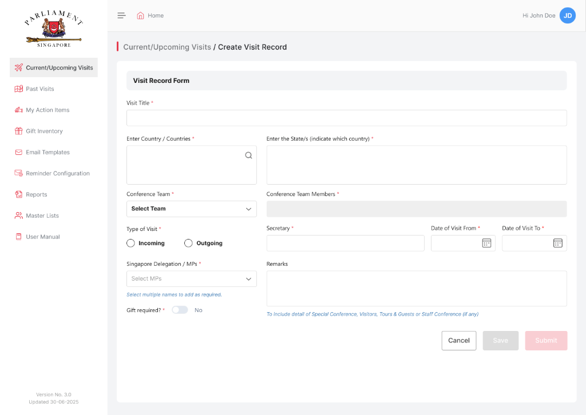
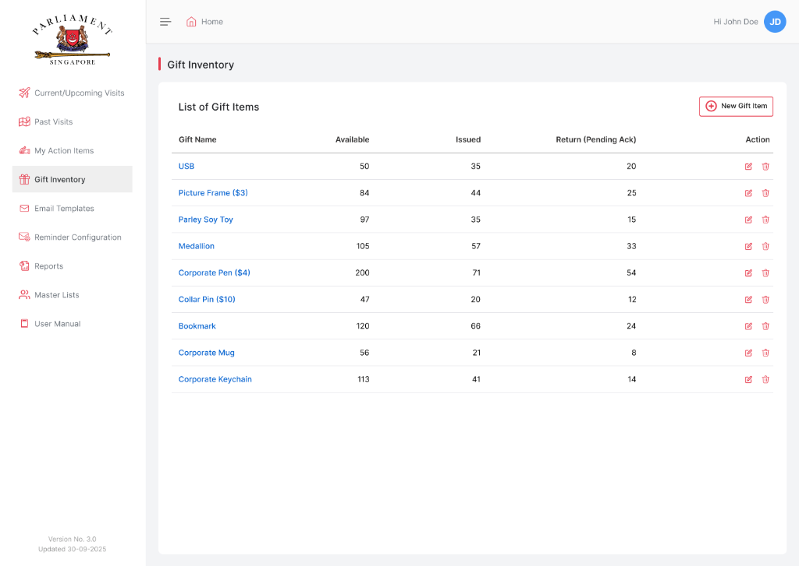
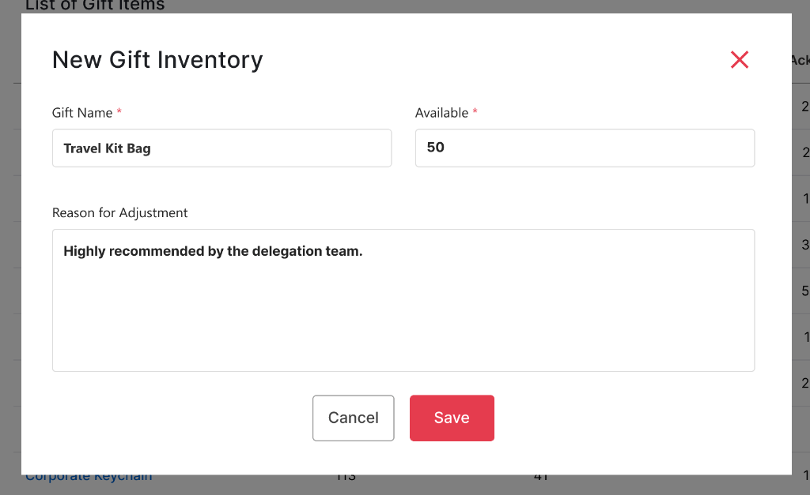
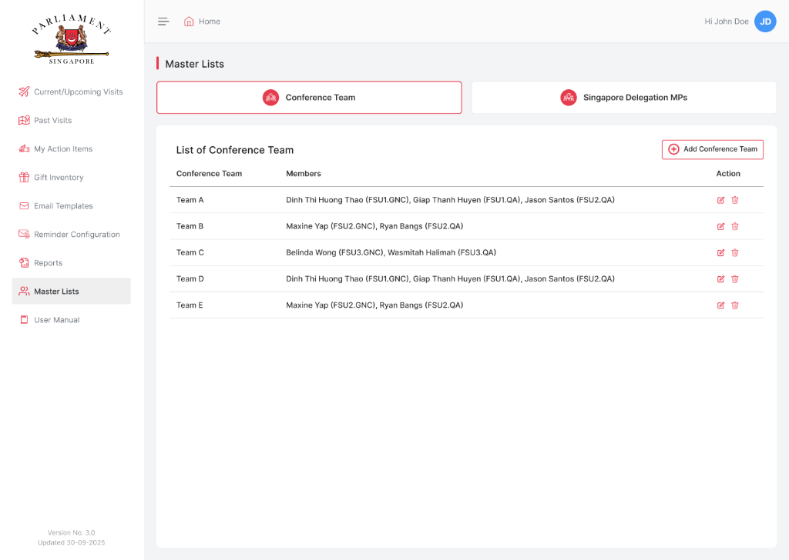
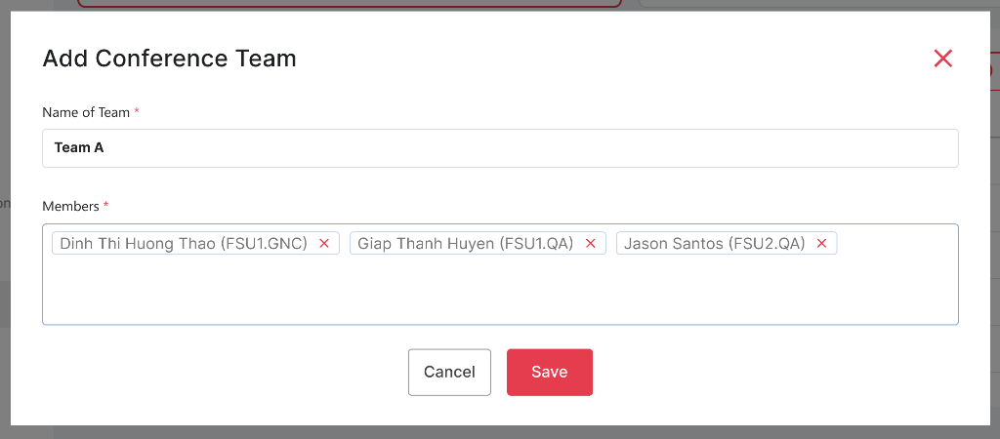
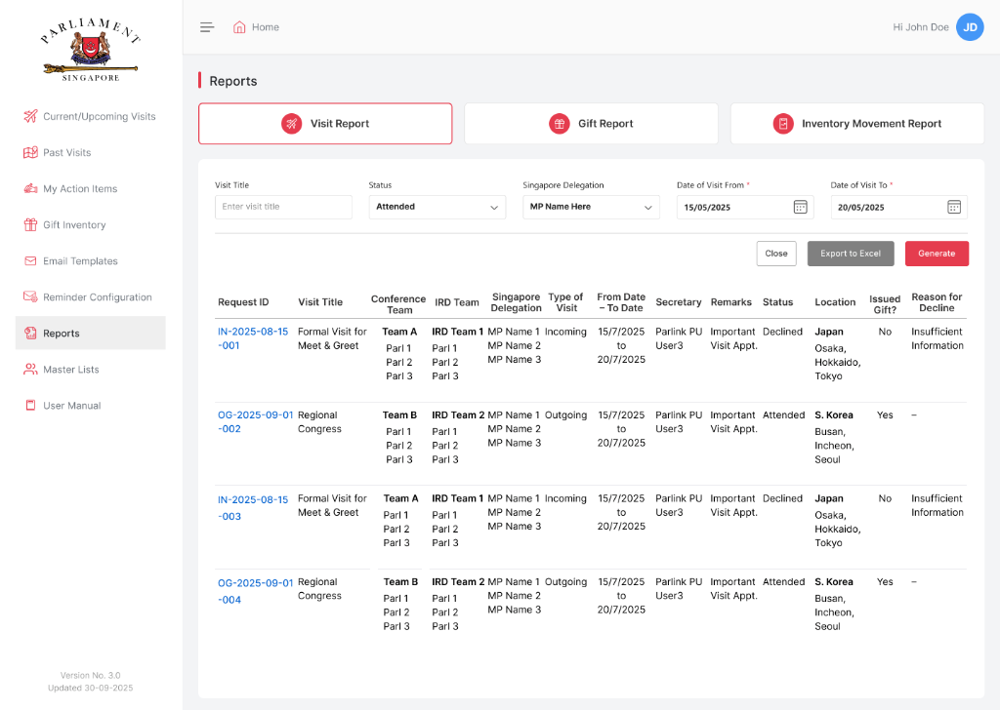
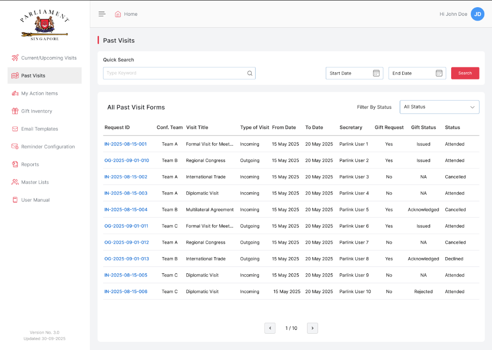
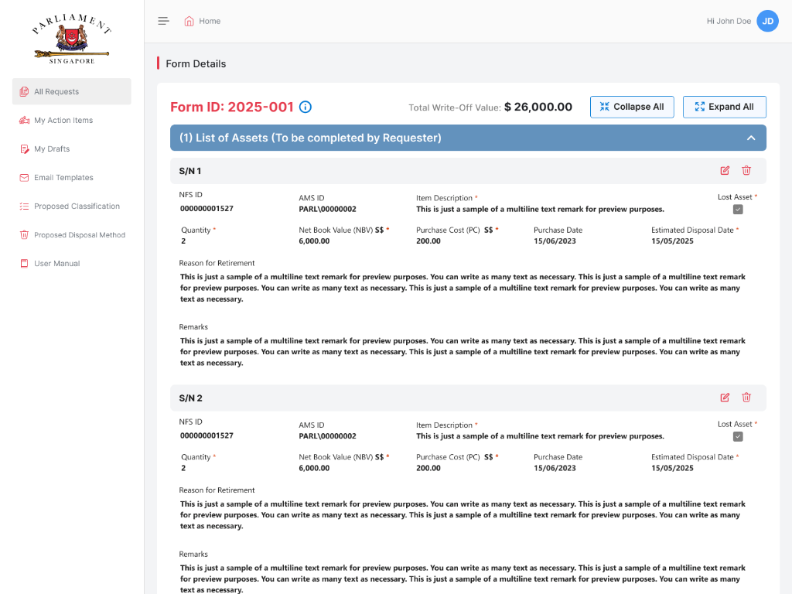
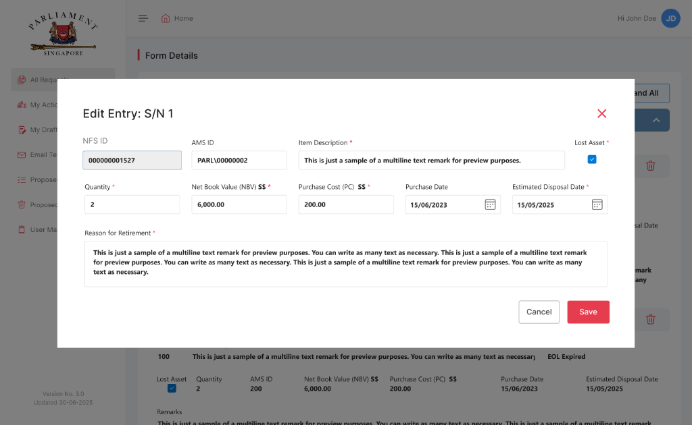
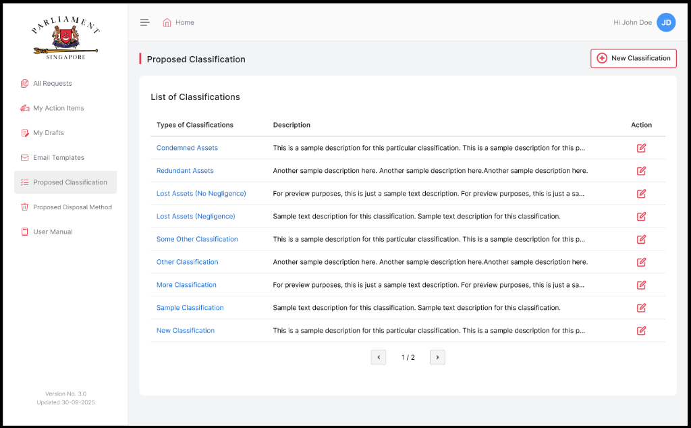

Designing institutional digital infrastructure for diplomatic missions, protocol inventory, and statutory asset governance


Context
The Parliament of Singapore serves as the legislative cornerstone of the nation, coordinating official international diplomacy, bilateral state missions, and parliamentary summits involving foreign Heads of State, Members of Parliament (MPs), and visiting dignitaries. In parallel, the Parliamentary Secretariat oversees thousands of high-value statutory equipment items, digital assets, and parliamentary infrastructure across ministries.
As Lead Product Designer, I architected two mission-critical institutional enterprise suites:
Official Travel & Protocol Portal
Centralized coordination suite for incoming foreign VIP visits, MP overseas delegations, conference officer rosters, and protocol gift vault inventory.
Asset Retirement & Disposal Portal
Compliance-driven internal platform managing multi-department asset write-offs, Net Book Value (NBV) math, physical disposal audits, and finance sign-offs.
The Problem
Parliamentary Secretariat staff previously relied on fragmented spreadsheets, physical paper requisition slips, and untracked email chains. In diplomatic operations, protocol gift issuance (medallions, corporate pens, commemorative plaques) lacked live stock accountability, risking stockouts during fast-moving bilateral summits. In asset governance, decommissioning aging IT and estate infrastructure required manual multi-department sign-offs, causing reconciliation delays and financial audit vulnerabilities.
Diplomatic protocols and parliamentary asset accounting allow zero margin for error. An unsynchronized delegation list or unverified asset write-off creates direct international and statutory risk.
Core Constraints
Designing for Singapore’s parliamentary administration required strict compliance with government standards:
- Strict Statutory Auditability: Every delegation itinerary update, gift requisition, and asset write-off reason required an immutable audit trail with timestamped user attribution.
- Dual Directionality in Protocol: Interfaces had to clearly distinguish between hosting incoming foreign delegations in Singapore versus dispatching Singapore MP delegations abroad.
- Multi-Tier Approval Matrix: Asset retirements required strict sequential sign-offs (Requester → Checker → Department Approver → Finance Verification).
Frameworks that guided both portals
Surface visit statuses (Upcoming, Attended, Cancelled) and write-off approval gates with unambiguous, standardized badges to prevent misinterpretation during high-stress operations.
Ensure diplomatic gift custodians see real-time on-hand stock vs. allocated summit items with automated minimum threshold warnings.
Structure multi-item write-off requests through collapsible accordion hierarchies, allowing officers to inspect high-level totals before drilling into serial numbers and purchase values.
Enforce predefined retirement categories (Condemned, Redundant, Lost Assets) at data entry to guarantee audit-ready financial reporting.
Diplomatic Travel, State Protocol & Gift Inventory
A centralized operations system designed for the International Relations Division (IRD) and Secretariat officers to orchestrate bilateral summits, parliamentary conferences, and state gift logistics.
1. Incoming & Outgoing Visits Ledger with Structured Record Creation
Parliamentary visits require live operational tracking across delegations, hosting conference teams (Teams A through E), meeting locations, and travel periods. I designed the Current & Upcoming Visits ledger paired with an inline record creation modal that guides officers through mandatory diplomatic metadata (Visit Type, Countries Involved, Designated Officers) without disruptive context switching.

2. Protocol Gift Inventory & Custody Adjustment Modals
State gifts presented to foreign dignitaries (Parliament Medallions, Silk Ties, Corporate Pens, Custom Plaques) must be tracked meticulously to avoid stockouts before major summits. I structured a dedicated Gift Inventory ledger tracking on-hand availability, issued stock, and return status (Pending Acknowledgment), paired with single-action stock adjustment dialogs with mandatory audit justifications.


3. Conference Team Configuration & MP Delegation Tagging
Parliamentary visits require assigning specific conference teams (Teams A through E) and designated Singapore Delegation MPs to itineraries. I structured a master lists management interface where Secretariat administrators configure team rosters, update officer assignments with interactive chip tags, and map delegation leads with zero friction.


4. Multi-Dimensional Diplomatic Audit Reporting & Past Visits Archive
For parliamentary reviews and ministry briefings, officers generate comprehensive visit summaries across countries (Japan, S. Korea, ASEAN partners), delegation members, and expenditure. I built a multi-tab report generator alongside a high-speed keyword archive for returning delegations.


Asset Retirement, Write-Off Pipeline & Disposal Audit
An enterprise compliance portal governing the complete decommissioning lifecycle of Parliamentary assets — from department write-off requests to Net Book Value calculation and statutory finance verification.
5. Departmental Write-Off Pipeline & Multi-Date Search Telemetry
Decommissioning parliamentary equipment requires cross-department coordination (CISD, Corporate Services, Estate & Facilities, Library & Research). I engineered the All Requests pipeline featuring keyword search, start/end date telemetry, and real-time status filtering across the statutory approval chain: Pending Checker → Pending Approval → Pending Finance Verification.
6. High-Density Form Inspection with Multi-Item Accordion Architecture
Single retirement forms often contain dozens of discrete physical items. I structured the Form Details view around expandable/collapsible line-item accordions (S/N 1, S/N 2), highlighting aggregate metrics (Total Write-Off Value: S$26,000.00) while exposing critical financial metadata per asset: NFS ID, AMS ID, Net Book Value (NBV S$), Purchase Cost (PC S$), Purchase Date, Estimated Disposal Date, and Lost Asset exception indicators.

7. Granular Asset Entry Editor & Statutory Classification Governance
To prevent data entry errors and maintain audit integrity, I designed a focused Asset Entry Editor Modal that enforces mandatory fields and reason-for-retirement justifications before write-offs can be submitted. In parallel, the Proposed Classification master establishes standard disposal categorizations (Condemned Assets, Redundant Assets, Lost Assets with/without Negligence) to ensure uniform accounting across all parliamentary ministries.


Outcome & Institutional Impact
Based on user acceptance testing and operational deployment across Parliamentary Secretariat, IRD, and Corporate Services divisions.